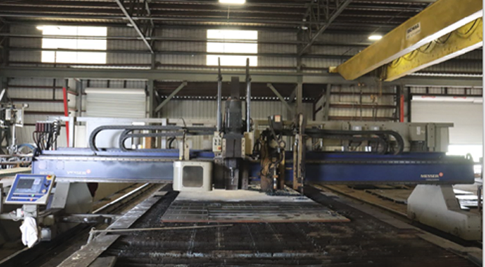
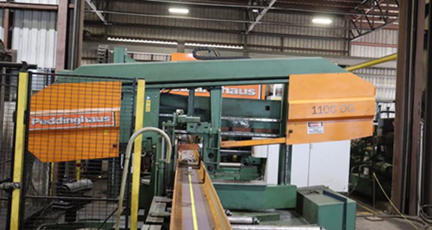
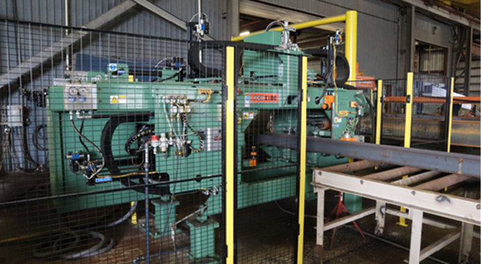
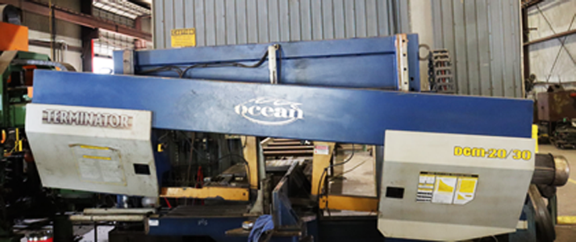
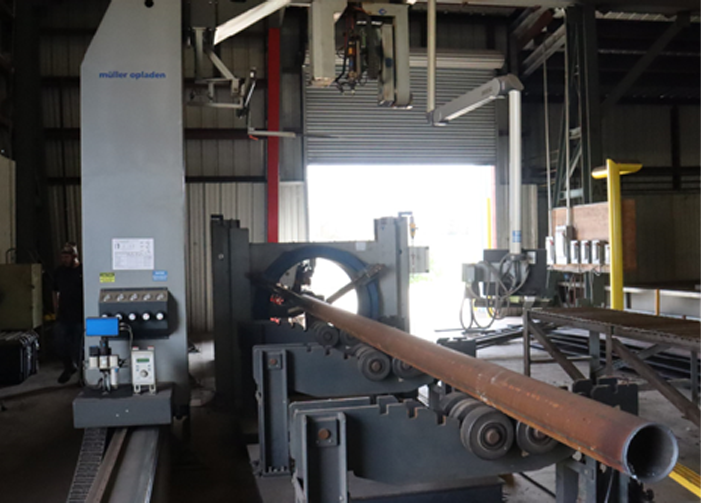
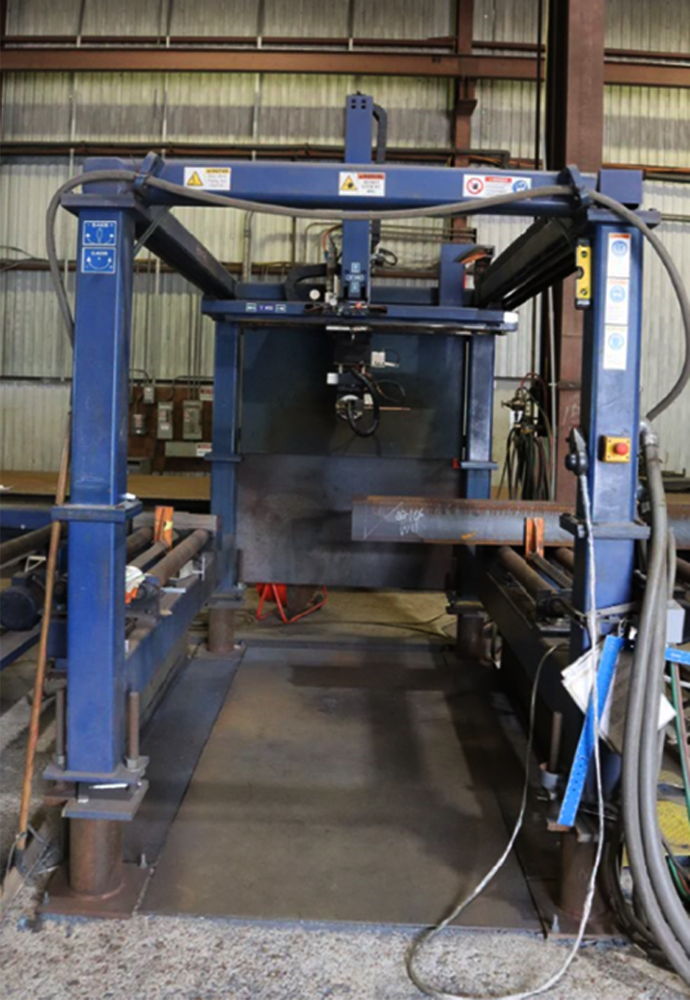
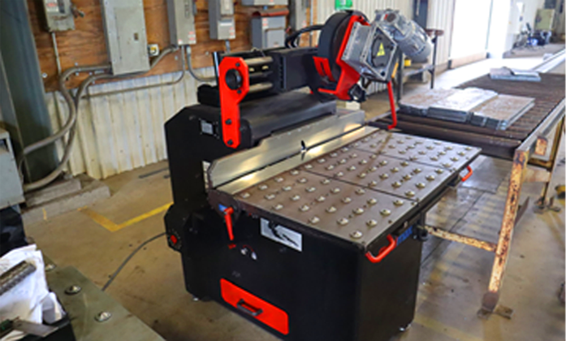
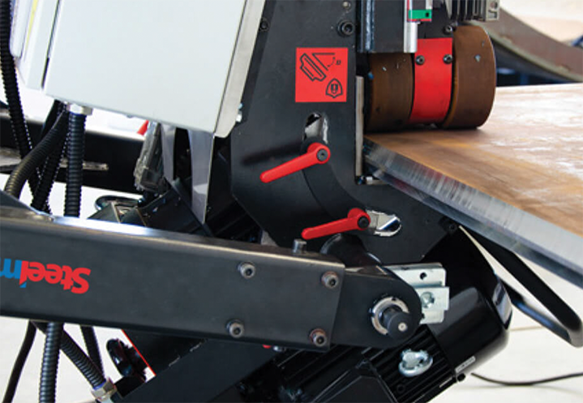

Plate Burning
With 3 burn tables in house we are ready to handle all of your plate
Processing needs.

Messer Model #MPC2000
- Highlights
- General SpecS
- Burn table cutting capabilities
- With up to 4 separate cutting processes including precision plasma, oxyfuel, drilling, and markers, our Messer model MPC2000 more than exceeds the industry standard and can handle extremely rigorous steel plate and drilling needs reliably with continuous production and precision to maximize operating efficiency.
Structural Shape Processing
With 4 high output saws, multiple
Processing machine
centers, coping line, and high speed bevelers there is no job too big or too small to handle.

Peddinghaus PCD Beam Line Model #1100 DG-C
Peddingnaus PCD Structural Steel Band Saw
Placed in tandem with our Peddinghaus PCD 1100A multi spindle drill line, the Peddinghaus PCD model 1100 DG structural steel band saw is built for speed and reliability to maximize steel processing efficiency
- Speed sawing
- Accuracy
- General specification
- full miter capacity
- The speed and versatility of our PCD 1100 DG band saw reduces cut times toa minimum and maximizes material production efficiency. Through the Use of features such as the rapid advance blade approach, automatic cutting speed transition, end of cut sensing, automatic retract, and automatic material sensing, our PCD 1100 DG band saw is forged to adapt to any potential accuracy needs for the project you may have in mind.

Peddinghaus PCD Beam Line Model #1100A
- HIGH SPEED DRILLING
- LAYOUT SCRIBING
- GENERAL SPECS
- Max Beam Width: 44"
- Max Flange Height: 18"
- Max Hole Size: 3"
- Min Part Width: 3"
- Min Part Thickness: 1/8"

Ocean Terminator Model DCM-20/30 (saw)
- STANDARD FEATURES
- The large sawing capacity of the Ocean Terminator OCM 20/30 band saw allows our fabricators to miter up to 45 degrees left and 60 degrees, significantly reducing handling time.
- The Ocean Terminator's hydraulic blade tensioning feature applies large 2” wide blades with a large variety of blade speeds providing consistent blade tension allows our fabricators to maximize production efficiency by speeding Up or slowing down material cutting based on the flow of production.
- TDual vices provide material clamping to reduce vibrations on both sides of the blade to produce precise cuts & reduce potential error. speeding up or slowing down material cutting based on the flow of production.
- The laser guide removes measuring errors on the fault of the operator and minimizes blade processing time to maximize production flow efficiency.

Mueller Opladen (pipe processing)
3D Thermal Cutting Pipe Coper General Specifications
- Max pipe diameter: 48"
- Max pipe weight: 13.23 Metric Tons
- Oxy-fuel cutting system
- Min/Max wall thickness: 2/5" to 6"

Ocean Liberator (beam coper)
- CNC BEAM COPING MACHINE
- GENERAL SPECIFICATIONS
- The Ocean Liberator is an automated 5-axis CNC robotic oxy-fuel cutting material coper that allows our operators to make accurate and repeatable cuts from any angle on most forms of material (beams, angles, channels, plates, etc.) at up to 30 inches per minute.
Beveling

Steelmax Beveler Model SBM-500
- STATIONARY BEVELING MACHINE
- GENERAL SPECIFICATIONS
- SBM 500 incorporates a high-speed rotary milling head that manufactures. clean, repeatable milled surfaces without heat affected zones or thermal distortion.
- The consistent throughput and high versatility of the SBM-500 beveler allows King Fab operators to produce dependable bevels on a large variety of material at an incredibly expeditious rate, helping especially on projects where there is a plethora of plates or material need beveling.

Steelmax Beveler ABM 50
- SELF PROPELLED INVERTING BEVELING MACHINE
- GENERAL SPECIFICATIONS
- The SteetMax ABM 50 mobile beveling machine generates precise, high quality single and double-sided bevels. The lightweight wheels attached to the bottom provide seamless mobility and allow for quick transportation around our 190,000 square foot facility. The mobility and high output factors of the ABM-50 prevent King Fab operators from having to take the extra step of moving material to a certain location, and works to minimize labor times.
- The SteelMax ABM 50 adjustable bevel angle between 15 and 60 degrees and is capable of easily rotating to produce bevels up to 2" wide, so there is no need to take the extra time to flip plates or other materials.